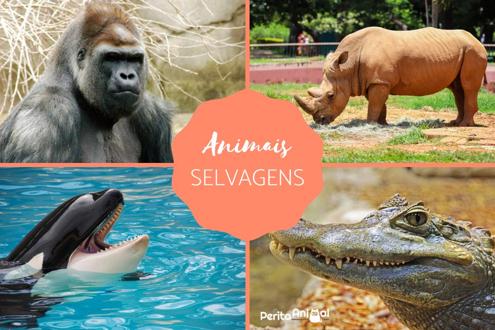

O que é um animal silvestre?
É aquele que vive na natureza e não tem (ou não deveria ter) contato com os humanos. Alguns exemplos são a onça-pintada, a arara-azul, o mico-leão-dourado e o jabuti-piranga. Quando tirados da natureza, os animais silvestres sofrem, podendo ter dificuldades para crescer e se reproduzir, por exemplo.
O que é o tráfico de animais silvestres?
Tráfico é o comércio ilegal. Traficar animais significa capturá-los na natureza, prendê-los e vendê-los com o objetivo de ganhar dinheiro. Se de alguma forma participamos disso, por exemplo comprando animais sm saber a procedência, estamos contribuindo para o tráfico de animais. Acredita-se que o comércio ilegal de animais movimente cerca de 10 bilhões de dólares por ano em todo o mundo. Só o tráfico de drogas e armas é maior.
O que o tráfico de animais silvestres tem a ver comigo?
Todos os seres vivos, inclusive os humanos, dependem da natureza para sobreviver, pois é dela que obtemos desde alimentos até remédios. Os animais são parte fundamental da cadeia. Se forem extintos ou se tornarem raros, comprometem todo o equilíbrio da natureza.
Qual a participação do Brasil no tráfico internacional de animais?
Há uma relação entre o tráfico nacional e o internacional: o Brasil possui um grande comércio interno de animais, que sustenta os traficantes que agem no país e servem como intermediários para os traficantes internacionais. Se o tráfico interno diminuir, o número de animais brasileiros levados para o exterior também será menor.